Convocados, goleiros, jogos do Grupo A e as curiosidades de uma das seleções mais tradicionais da Ásia, em busca de repetir a histórica semifinal de 2002.
Conhecer o elencoUm raio-X rápido da Coreia do Sul antes de mergulhar nos detalhes da campanha de 2026.
Nome inspirado no símbolo Taegeuk, presente no centro da bandeira nacional, que também batiza o uniforme.
Atacante de 33 anos, ídolo do Tottenham e atualmente no Los Angeles FC, disputa sua quarta Copa do Mundo.
Lenda do futebol coreano, foi capitão da histórica campanha de 2002 e venceu a Bola de Bronze daquela Copa.
Única seleção da Confederação Asiática (AFC) a se classificar para 2026 sem perder: 11 vitórias e 5 empates.
Dividiu a chave com o anfitrião México, a República Tcheca (de volta à Copa após 20 anos) e a África do Sul.
Terminou a fase com 3 pontos e segue viva na briga pela vaga entre os melhores terceiros colocados do torneio.
Fase disputada inteiramente em solo mexicano — Guadalajara e Monterrey — entre 11 e 24 de junho de 2026.
| # | Seleção | J | V | E | D | GP | GC | SG | Pts |
|---|---|---|---|---|---|---|---|---|---|
| 1 | 🇲🇽 México | 3 | 3 | 0 | 0 | 6 | 0 | +6 | 9 |
| 2 | 🇿🇦 África do Sul | 3 | 1 | 1 | 1 | 2 | 3 | -1 | 4 |
| 3 | 🇰🇷 Coreia do Sul | 3 | 1 | 0 | 2 | 2 | 3 | -1 | 3 |
| 4 | 🇨🇿 República Tcheca | 3 | 0 | 1 | 2 | 2 | 6 | -4 | 1 |
México e África do Sul avançaram diretamente às oitavas. A Coreia do Sul, com 3 pontos, disputa vaga entre os melhores terceiros colocados do torneio — formato inédito desta Copa com 48 seleções.
Três partidas, todas em solo mexicano, repletas de emoção até a última rodada.
Técnico Hong Myung-bo escalou 3 goleiros, 10 defensores, 9/10 meio-campistas e 3/4 atacantes — base formada em clubes da Europa e da Ásia.
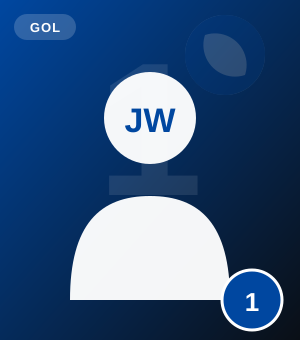
Goleiro
Ulsan HD (Coreia do Sul)
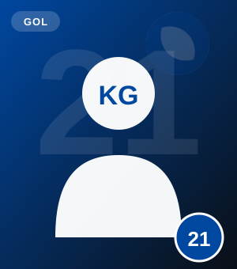
Goleiro
FC Tokyo (Japão)
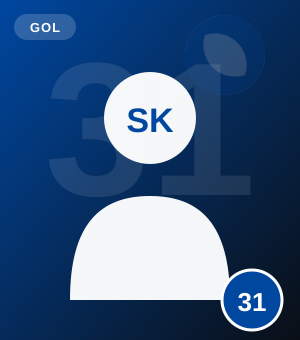
Goleiro
Jeonbuk Hyundai Motors (Coreia do Sul)
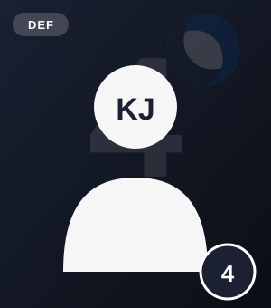
Zagueiro
Bayern de Munique (Alemanha)
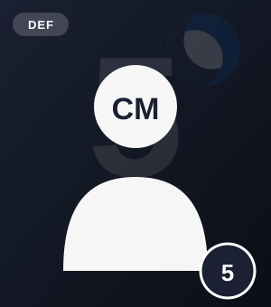
Zagueiro
Sharjah FC (Emirados Árabes)
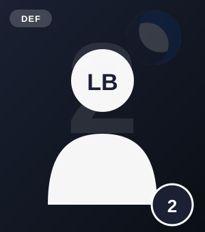
Lateral
FC Midtjylland (Dinamarca)
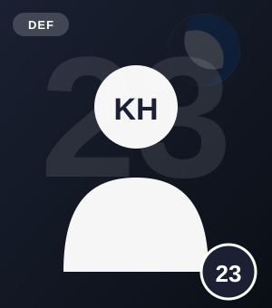
Zagueiro
Kashima Antlers (Japão)
Lateral
Zhejiang FC (China)
Zagueiro
Gangwon FC (Coreia do Sul)
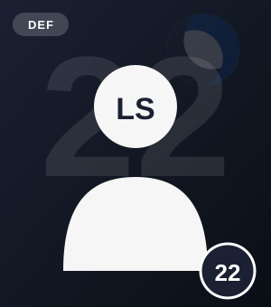
Lateral
Áustria Viena (Áustria)
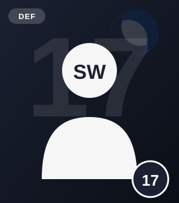
Lateral
Estrela Vermelha (Sérvia)
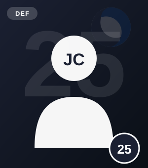
Lateral / Volante
Borussia Mönchengladbach (Alemanha)
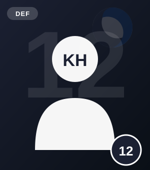
Lateral
Daejeon Hana Citizen (Coreia do Sul)
Meio-campista
Paris Saint-Germain (França)
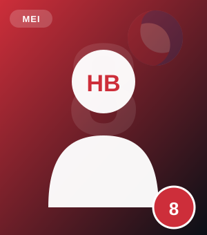
Volante
Feyenoord (Holanda)
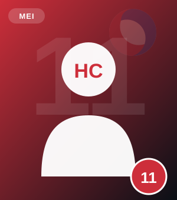
Meio-atacante
Wolverhampton (Inglaterra)
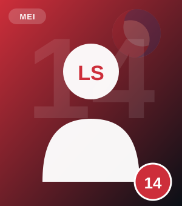
Meio-campista
Mainz 05 (Alemanha)
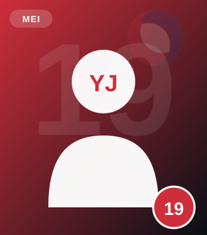
Ponta
Celtic (Escócia)
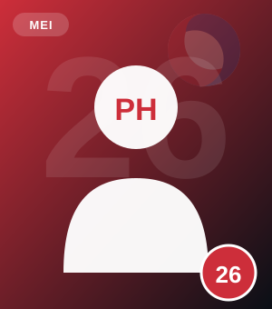
Meio-campista
Birmingham City (Inglaterra)
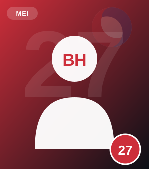
Ponta
Stoke City (Inglaterra)
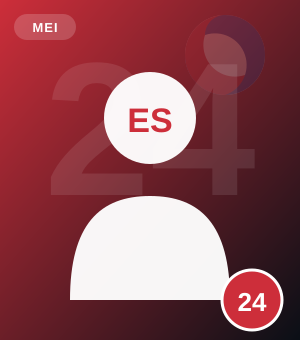
Meio-campista
Swansea City (Inglaterra)
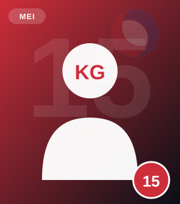
Volante
Jeonbuk Hyundai Motors (Coreia do Sul)
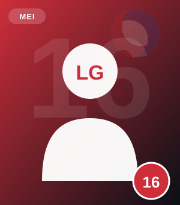
Meio-campista
Ulsan HD (Coreia do Sul)
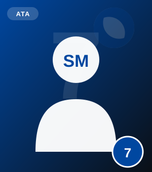
Atacante
Los Angeles FC (EUA) · ex-Tottenham
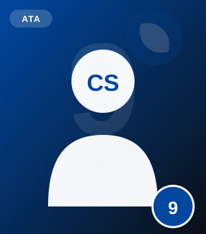
Atacante
FC Midtjylland (Dinamarca)
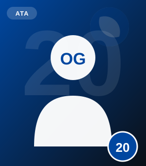
Atacante
Beşiktaş (Turquia)
A Coreia do Sul estreou em Mundiais em 1954, na Suíça, menos de um ano após o fim da Guerra da Coreia — e sofreu duas goleadas (9 a 0 da Hungria e 7 a 0 da Turquia) sem marcar gols. Desde 1986, porém, tornou-se presença praticamente constante, somando agora sua 12ª participação, uma das mais longas sequências fora da Europa e da América do Sul.
O auge histórico veio em 2002, como país-sede ao lado do Japão: invicta na fase de grupos (vitórias sobre Polônia e Portugal, empate com os EUA), eliminou Itália e Espanha no mata-mata antes de cair para a Alemanha na semifinal, terminando em 4º lugar — o melhor resultado de uma seleção asiática na história da competição.
Ver curiosidadesDa estratégia das camisas trocadas ao recorde de Hong Myung-bo, conheça os bastidores dos Guerreiros Taegeuk.
Hong Myung-bo, treinador em 2026, foi o capitão e zagueiro da histórica campanha de 2002, recebendo a Bola de Bronze de melhor jogador do torneio — único asiático a vencer o prêmio.
Em amistosos antes da Copa, Son Heung-min (normalmente camisa 7) jogou de número 13, e Kim Min-jae (normalmente 4) usou a 16 — estratégia para dificultar a análise de vídeo dos adversários.
Hong Myung-bo é o coreano com mais jogos disputados em Mundiais: 16 partidas em 4 edições (1990 a 2002). Son Heung-min, com 10 jogos, pode se aproximar dessa marca nesta Copa.
A Coreia do Sul mantém grande retrospecto contra rivais europeus em Copas: seis das suas sete vitórias na história do torneio foram conquistadas diante de seleções da Europa.
Ahn Jung-hwan (herói de 2002) e Son Heung-min são os maiores artilheiros sul-coreanos em Copas, com três gols cada um na competição.
Em 2002, Ahn Jung-hwan marcou o gol de ouro nas oitavas de final, eliminando a Itália. O lance é até hoje considerado um dos maiores momentos da história das Copas para seleções asiáticas.
Na Rússia, a Coreia venceu a Alemanha (então campeã do mundo) por 2 a 0, com gols de Kim Young-gwon e Son Heung-min nos acréscimos, eliminando os alemães na fase de grupos pela primeira vez desde 1938.
No Catar, um gol nos acréscimos de Hwang Hee-chan, em assistência de Son, garantiu a vitória sobre Portugal por 2 a 1 e a vaga nas oitavas pelo critério de gols, superando o Uruguai.
Para 2026, a delegação treinou em Salt Lake City (EUA) antes de viajar, simulando a altitude de 1.600 metros de Guadalajara, onde a seleção fez duas de suas três partidas na fase de grupos.
"Guerreiros Taegeuk" é uma referência ao símbolo Taegeuk (o círculo vermelho e azul) no centro da bandeira nacional, presente também no design tradicional do uniforme da seleção.
"Sentimos que poderíamos ser a grande surpresa do torneio. Ele nos tornou jogadores diferentes — não tínhamos medo de ninguém."